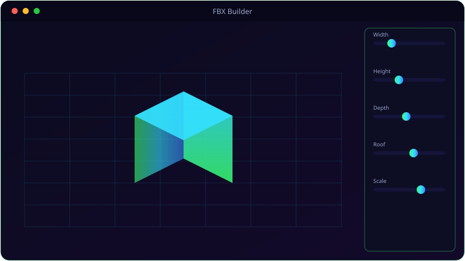

See It In Action
A look inside FBX Builder.

What It Does
Everything FBX Builder brings to the table.
🏢
Parametric Generators
Buildings, vehicles (sedan/SUV/truck/van) and eight prop types — bench, lamppost, fence, sign, barrier, hydrant, mailbox, trashcan.
🖥️
Live OpenGL Viewport
Orbit, pan and zoom a real-time 3D preview; toggle wireframe and grid as you tweak parameters.
📥
FBX Import
Reads both ASCII and binary FBX 7.x — drag files from the navigator or the desktop into the viewport.
📤
UE5-Correct Export
Writes FBX ASCII 7.4, Z-up, Y-forward, 1 unit = 1 cm — matching Unreal's import defaults exactly.
🗂️
Three-Panel Workflow
File navigator, viewport and parameter panel side by side — adjust and re-export in seconds.
🧮
No External SDK
Geometry math in numpy, FBX written directly — nothing to install beyond Python packages.
Get Ready
System requirements.
💻
Minimum
- OS: Windows 10 (64-bit) or Windows 11
- CPU: Dual-core, 2.0 GHz
- Memory: 4 GB RAM
- Graphics: Any DirectX 11 / integrated GPU
- Storage: 250 MB + space for your files
- Display: 1280×768 or higher
- Graphics: OpenGL 3.3-capable GPU (for the 3D viewport)
🚀
Recommended
- OS: Windows 11 (64-bit)
- CPU: Quad-core, 3.0 GHz
- Memory: 8 GB RAM
- Graphics: Dedicated GPU (optional)
- Storage: SSD with a few GB free
- Display: 1920×1080 or higher
Under the Hood
The details.
| Generators | Building · Vehicle · Prop (8 types) |
| Import | FBX ASCII + binary 7.x |
| Export | FBX ASCII 7.4, Z-up, cm units (UE5-ready) |
| Viewport | PyOpenGL core, orbit camera, wireframe/grid toggles |
| Platform | Windows 10 / 11 |
Get FBX Builder.
Generate parametric FBX assets for Unreal Engine 5.
⬇ Download FBX BuilderFBX_Builder_Setup.exe · free · Windows 10/11